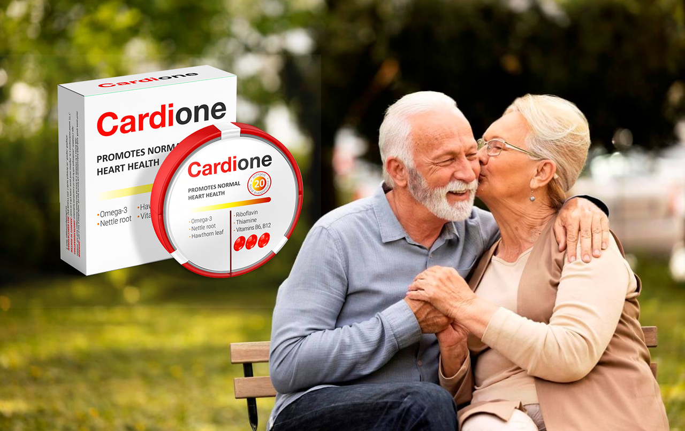

El Ministerio de Sanidad prevé que más de 200.000 personas en España morirán de enfermedades del corazón en 2023. Uno de cada cinco españoles morirá de un infarto. La hipertensión, la obstrucción de los vasos sanguíneos y la enfermedad del corazón provocan la muerte prematura.
El Doctor Enrique Asín Cardiel es un cardiólogo español, profesor. Es conocido por tratar a personas sin prescribir pastillas. Al mismo tiempo, todos los que acuden a él se recuperan. Entre los pacientes del profesor se encuentran personajes famosos de España, así como pacientes de varios países de América del Sur y del Norte (incluidos Estados Unidos, Brasil, Argentina, Perú y etc.).
El profesor Cardiel rara vez da entrevistas, e intenta dedicar más tiempo al tratamiento de los pacientes. Sin embargo, la periodista de nuestro canal tuvo suerte: el médico famoso aceptó responder a varias preguntas para aquellos pacientes que no tienen la oportunidad de pedir la cita en la clínica.
El Doctor Enrique Asín Cardiel ESTÁ ABSOLUTAMENTE SEGURO DE QUE CUALQUIER PERSONA PUEDE LLEVAR A CABO UN TRATAMIENTO DE LIMPIEZA DE LOS VASOS SANGUÍNEOS EN CASA Y MEJORAR EN GRAN MEDIDA SU SALUD Y BIENESTAR.Esta limpieza ayuda a deshacerse de los saltos de tensión y curar 9 enfermedades crónicas de los jubilados.
El médico nos contó cómo hacer un tratamiento de limpieza, léalo a continuación. Además, el material aborda los temas:
- ¡Vivir hasta la edad de 100 años sin pastillas es real!
- ¿Por qué las enfermedades crónicas incurables van de la mano con los vasos obstruidos?
- Signos ocultos y evidentes de vasos obstruidos
- TRATAMIENTOS MODERNOS PARA LA HIPERTENSIÓN RELACIONADA CON LA EDAD SIN PASTILLAS
¡Los vasos obstruidos pueden ser tu asesino!
Profesor Luis de la Cardiel:
- Te daré algunos datos que, espero, te harán reflexionar.
La causa más común de muerte en el planeta son las ENFERMEDADES CARDIOVASCULARES. La razón principal de su aparición con la edad es el COLESTEROL. Resulta que el colesterol es la sustancia más peligrosa del planeta. Esta sustancia mata a las personas con más frecuencia que el alcohol, la nicotina y las drogas.
En el 94% de los casos, si una persona no sobrevive hasta los 80 años, es porque la mata el colesterol.
¿Cómo es el colesterol y qué es? No voy a dar aquí una descripción de esta sustancia, como está escrito en los libros de texto médicos. Lo explicaré más fácil. Imagina la grasa fría que queda en una sartén sin lavar después del almuerzo. Así es como se ve el colesterol.
Esta sustancia, al estar en la sangre, se deposita en las paredes de los vasos sanguíneos. Primero, una pequeña placa (a los 20-25 años), luego la capa de colesterol crece rápidamente (a los 25-40 años), ya que más partículas se adhieren a la capa pegajosa. COMO RESULTADO, A LOS 40 AÑOS, EL COLESTEROL REDUCE LA LUZ DE LOS VASOS CASI A LA MITAD. En respuesta a esto, el corazón no tiene más remedio que aumentar la tensión. Una persona tiene saltos de tensión e hipertensión relacionada con la edad con todas las consecuencias. ¡Pero ni siquiera eso es más peligroso!
Mucho más peligroso es el hecho de que el colesterol obstruye por completo los pequeños vasos que están presentes en todos los tejidos. Como resultado del deterioro del suministro de sangre, se desarrollan procesos patológicos en los órganos internos. En su contexto una persona tiene llagas crónicas.
Primero, le duele el estómago, luego el bazo y después de un tiempo tiene estenosis del hígado y del páncreas. Por lo general, en estos casos, dicen que la salud de una persona se echa a perder. El colesterol es lo que desencadena este proceso con mayor frecuencia.
Literalmente todo depende del estado de los vasos del cuerpo. Si los vasos se obstruyen en las piernas, esto conduce a varices, edema constante y pesadez eterna en las piernas. Si esto ocurre en el hígado, se produce hepatosis y cirrosis, si en las articulaciones, entonces aparece artritis y artrosis o dolor de la columna. Si los vasos sanguíneos están obstruidos en los ojos, la persona se vuelve ciega gradualmente.
Es imposible evitar la obstrucción vascular. Se acumula en los vasos sanguíneos de todos. La obstrucción de los vasos sanguíneos es la causa de la mortalidad temprana..
ES EL COLESTEROL EL QUE DESENCADENA LA REACCIÓN DEL ENVEJECIMIENTO EN EL CUERPO. Y es la obstrucción de los vasos que acorta la vida de una persona dejándole menor tiempo de vida.
¡En vez de vivir hasta 100 años, las personas a menudo no sobreviven hasta 70!Especialmente aquellos que tienen hipertensión relacionada con la edad a los 40-50 años. Por cierto, es uno de los síntomas más evidentes de obstrucción vascular.
No solo del colesterol: ¡estas sustancias también obstruyen tus vasos!
Profesor Luis de la Cardiel:
El colesterol no es todo, ¡hay dos sustancias más que se acumulan en los vasos!
Masa de coágulos
Si el colesterol se parece a la grasa, entonces la masa de trombos (coágulos de sangre) se parece al requesón. Se forman acumulaciones de coágulos en las paredes internas de los vasos. El riesgo de coágulos de sangre es aún mayor con el colesterol. EN CUALQUIER MOMENTO, EL COÁGULO DE SANGRE PUEDE DESPRENDERSE DE LA PARED DEL VASO Y LLEGAR AL CORAZÓN, LO QUE PROVOCARÁ UN ATAQUE CARDÍACO O AL CEREBRO, LO QUE CAUSARÁ UN DERRAME CEREBRAL. Ambas enfermedades son fatales con una probabilidad muy alta de muerte y discapacidad .
Cuanto mayor sea la persona, mayor será el riesgo de que el coágulo se desprenda. Es por eso que las personas mayores a menudo sufren de un accidente cerebrovascular o infarto.
Cristales de calcio
Se trata de sales de metales pesados, mercurio, diversas sustancias químicas acumuladas durante su vida. Si una persona, por ejemplo, trabajó en una producción peligrosa, entonces tiene más depósitos de este tipo. Aunque teniendo en cuenta la ecología actual, los depósitos de calcio se acumulan en todos. Estas sustancias, como ya se ha demostrado, son CANCERÍGENAS. Es decir, promueven la divista celular anormal, lo que lleva al cáncer.
En casi el 98% de los fallecidos por cáncer, se encuentran altos niveles de depósitos cristalinos en la sangre. Todos sabemos que el mercurio es dañino. Con una gran acumulación de cristales de calcio, la sangre misma se vuelve dañina.
Evaluar el estado de los vasos sanguíneos para detectar síntomas:
Si tiene al menos 2 de los siguientes síntomas, ¡debe limpiar sus vasos sanguíneos inmediatamente!
- Hinchazón por la mañana
- Zumbido de oídos
- Moscas volantes en los ojos
- Dolor en las articulaciones
- Mareo
- Insomnio de noche y somnolencia de día
- Sensación de fatiga constante
- Vista borrosa
- Deterioro de la memoria
- Venas varicosas
- Disnea
- Problemas gastrointestinales frecuentes
- Problemas de sobrepeso
Profesor Luis de la Cardiel:
Si nunca se ha ocupado de la limpieza de los vasos sanguíneos, después de utilizar el producto, sentirá una mejora desde el primer día.
¿Estás diciendo que limpiar los vasos sanguíneos puede prolongar la vida de los ancianos y estabilizar la tensión arterial?
Profesor Luis de la Cardiel:
- Lo sé exactamente. En la clínica ahora prescribimos la limpieza de los vasos a todos los pacientes mayores de 50 años (algunos mayores de 40 años). Y después de la limpieza, ya los examinamos. EN 9 DE CADA 10 PERSONAS LA TENSIÓN SE NORMALIZA INMEDIATAMENTE DESPUÉS DE LA LIMPIEZA Y NO REQUIERE TRATAMIENTO.
En otras palabras, es posible que muchos de los que ahora toman pastillas diariamente para estabilizar su tensión arterial pudieran vivir sin ello. Todo lo que necesitan es limpiar los vasos. ¡Incluso si la hipertensión no desaparece por completo (y esto también sucede), se sienten mucho mejor!
Desafortunadamente, esta forma simple de normalizar la tensión arterial es escondida por médicos y compañías farmacéuticas corruptas, que se benefician de tratamientos largos y costosos. Después de todo, cuanto más tiempo esté enferma una persona, más gastará en medicamentos. Es beneficioso para ellos. La limpieza de los vasos sanguíneos es fácil, económica y rápidamente ayuda a recuperarse.
Un método de limpieza de vasos sanguíneos para pensionados e hipertensos.
Profesor Luis de la Cardiel:
- Hasta la fecha, solo hay un medicamento en España que hace bien esta tarea. Se llama las gotas Cardiofort. Este fármaco fue creado en 2021 por el Instituto Vascular y Cardíaco. El medicamento contiene aproximadamente 40 componentes activos: extractos de plantas útiles para los vasos sanguíneos, vitaminas, micro y macroelementos.
Me gustaría mencionar que este producto no contiene sustancias químicas, solo extractos concentrados de hierbas medicinales con propiedades de limpieza de las células sanguíneas. Por eso es tan beneficioso para el organismo.
La mayoría de los pacientes me siguen pidiendo consejo para la limpieza de los vasos sanguíneos. Últimamente, solo les recomiendo este producto. Es altamente eficaz.
Por cierto, Japón tiene el récord de esperanza de vida. Vivir hasta los 100 años para los japoneses es algo común. Si antes los japoneses limpiaban los vasos sanguíneos con hierbas, ejercicio y yoga, ahora usan medicamentos especiales basados en "oxígeno activo". Y hoy vemos el resultado de tal decisión. Los propios japoneses comenzaron a prestar mayor atención a la limpieza de los vasos sanguíneos a la edad mayor de 40-50 años, cuando se adoptó el Programa Nacional de Mejoramiento de la Salud y Longevidad. En esta ley, la limpieza de los vasos está fijada por un párrafo separado.
¿Cuánto tiempo se debe tomar las gotas Cardiofort para que los vasos se limpien?
En promedio, el curso del medicamento es de 2 a 4 semanas, 30 gotas 2 veces al día. Cuando lo termines, debes mirar tu estado de salud.
Mencionaré lo que pueden hacer las gotas Cardiofort con tu cuerpo y salud durante la limpieza, así como varios meses después.
Limpian y recuperarán los vasos sanguíneos
Debido a las "moléculas activas de oxígeno", las gotas Cardiofort disolverán los depósitos de colesterol, los coágulos de sangre y las acumulaciones de calcio. Además, gracias al extracto de Ginkgo Biloba, el remedio aumenta el tono de los vasos sanguíneos y restaura su elasticidad. Después de un curso de un mes, como lo confirman los datos de la investigación, los vasos se vuelven tan limpios y elásticos como en los jóvenes de 25 a 30 años. Se restauran los pequeños capilares. Como resultado, la tensión de una persona deja de saltar, la debilidad, la somnolencia desaparece y mejora la curación de heridas y cortes. Además, aparece más energía. Tendrás mucha energía, querrás hacer algo en casa.
Recuperarán los órganos internos y las articulaciones
Después de limpiar los vasos, comenzará la recuperación de los órganos internos. Afortunadamente, la naturaleza nos ha otorgado una propiedad: la regeneración celular. Como resultado, muchas enfermedades desaparecen. Por ejemplo, si te duele el páncreas o el bazo, dejará de doler. Muy a menudo las úlceras del estómago y del duodeno se curan después de limpiar los vasos sanguíneos. Además, se restauran las articulaciones. Los crujidos y chasquidos en el cuello, la espalda y las articulaciones desaparecen. Los cartílagos cobran vida. Las rodillas y los dedos ya no reaccionan a los cambios del clima. La movilidad de las articulaciones vuelve a la normalidad.
Derretirán el exceso de grasa
El sobrepeso es lo que agrava la condición de los pacientes hipertensos y de personas mayores de 4 a 5 veces. Cuanto mayor sea el peso, mayor será la carga en los vasos, el corazón y las articulaciones. A menudo, la causa del aumento de peso es la obstrucción de los vasos sanguíneos, ya que la glucosa no puede excretarse de los tejidos en la cantidad correcta. Después de limpiar los depósitos de los vasos, el peso empieza a desaparecer automáticamente. Además, las gotas Cardiofort tienen un extracto de veneno de abeja, que acelera la descomposición de la grasa. En promedio, un mes después de limpiar los vasos sanguíneos, una persona pierde de 8 a 12 kg.
Restaurarán la vista y la memoria
Cardiofort contiene un extracto de conos de alerce jóvenes, que puede restaurar los microvasos del fondo de ojo, como resultado, la vista se normaliza gradualmente. Muchas personas comienzan a ver desde lejos los números de los autobuses y pueden volver a insertar el hilo en la aguja. Hay una recuperación total de los vasos en los ojos. ¡Aquellos que tienen vasos sanguíneos limpios no se enfrentan a la ceguera en absoluto! Todos los oftalmólogos lo saben.
¡Recuperan la potencia en los hombres!
Uno de los efectos sorprendentes de la limpieza de los vasos sanguíneos es que la hormona testosterona comienza a producirse nuevamente en los hombres. Como resultado, la prostatitis desaparece y el adenoma de próstata se retrasa. Y también vuelve la potencia. Si tienes menos de 70 años, puedes volver a tener sexo.
¡Escasez de las gotas Cardiofort en las farmacias españolas!
Por lo que sabemos, comprar las gotas Cardiofort en farmacias es muy difícil. Este medicamento rara vez está disponible. ¿Es eso cierto? ¿Y qué podrías aconsejar a los ciudadanos españoles?
- Sí, es cierto. Las gotas Cardiofort se producen en pequeños lotes limitados y, por lo tanto, simplemente no llega a las farmacias. La mayor parte va, desafortunadamente, al extranjero, otra parte la compran las clínicas privadas.
Desafortunadamente, no tenemos este producto en volumen suficiente para todos los pacientes hipertensos en España. Por lo tanto, decidimos ofrecerlo a aquellos que dejen la solicitud en el sitio lo más rápido posible.
Si desea curar su hipertensión con este producto único, le recomiendo que lo pida lo antes posible mientras esté disponible.
Condiciones para recibir las gotas Cardiofort:
- Debes estar en España. No enviamos Cardiofort fuera del país.
- La compra de las gotas Cardiofort está permitida SOLO PARA EL USO PERSONAL. ¡Les pido a los revendedores que dejen el remedio para la gente! ¡Sacar provecho de los ancianos es inhumano!
- Se puede solicitar el recibo en este sitio web completando el formulario especial a continuación. En él hay que indicar el número de teléfono para contactar con nuestro médico consultor.
¡Aproveche esta oportunidad antes de que otros lo hagan!
Si desea mejorar la salud del cuerpo y eliminar los saltos repentinos de tensión con la ayuda de una limpieza profunda de los vasos sanguíneos, solicite el medicamento lo antes posible, mientras aún esté disponible.
¡Has ganado nuestro premio principal: !Cardione con un 50% de descuento!
Opiniones